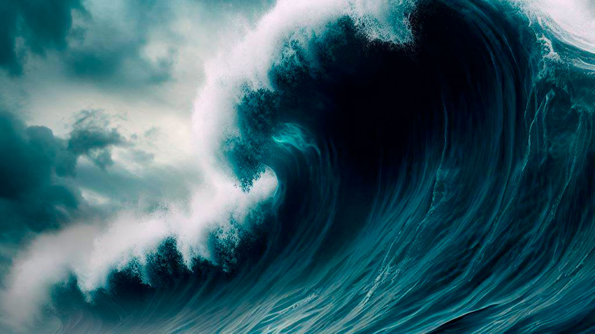
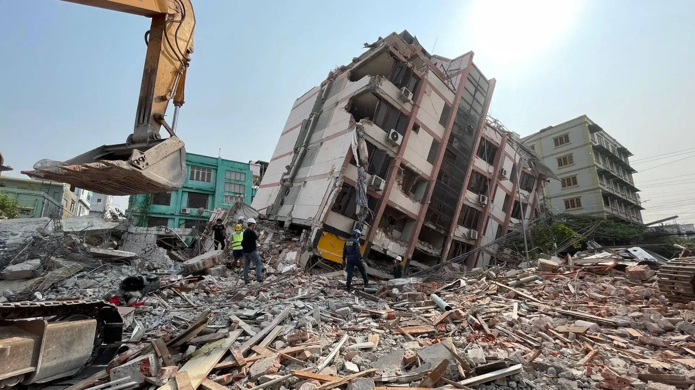
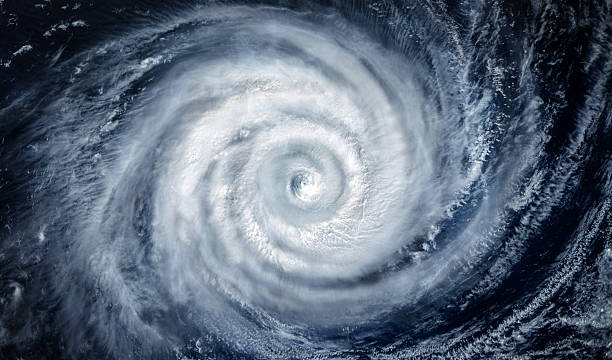
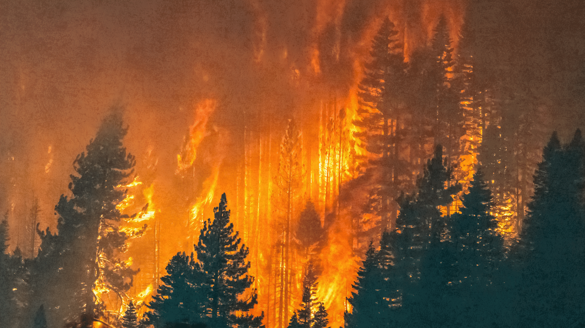

Los volcanes son estructuras geológicas que emergen de la tierra o del fondo del mar, poseen una forma similar a una montaña (en la mayoria de los casos) pero con uno o varios conductos volcánicos por donde sale el magma, (lava) y gases provenientes del interior de la Tierra.
El ascenso del magma ocurre en episodios de actividad violenta denominados erupciones, que pueden variar en intensidad, duración y frecuencia, desde suaves corrientes de lava hasta explosiones extremadamente destructivas.
La mayoria de los volcanes activos del mundo estan sobre una zona conocida como el Cinturón de Fuego. Es una extensa region que rodea gran parte del océano Pacífico y se caracteriza por una intensa actividad tectónica y volcánica. En esta región se encuentran numerosas zonas de subducción y límites entre placas tectónicas, donde se producen frecuentes terremotos y erupciones volcánicas.
Antes que surga un volcán, El origen de un volcán se da en el interior de la tierra, mas precisamente en el manto terrestre (entre 50 y 200 km de profundidad). A estas profundidades, las rocas se encuentran a temperaturas extremas (entre 700 °C y 1300 °C) y bajo presiones gigantescas que rondan los 15.000 bares (1.5 Gigapascales) hasta los 65.000 a 70.000 bares, lo que equivale a unos 15.000 a 70.000 veces la presión atmosférica que existe a nivel del mar.
El magma se genera cuando las rocas del manto sufren fusión parcial. Esto ocurre principalmente por:
Descompresión: Movimiento de placas tectónicas que se separan, permitiendo que la roca ascienda y se funda al bajar la presión.
Aumento de temperatura: Contacto con puntos calientes (zonas donde material extremadamente caliente del manto inferior llega a zonas donde la presion es menor).
Subducción: Zonas donde una placa tectónica, se hunde por debajo de otra debido a que es más densa. Al descender, libera agua y otros materiales que favorecen la fusión parcial del manto, formando magma.
Al fundirse, la roca fluida rica en silicatos y gases disueltos se vuelve menos densa que la roca sólida circundante. Por flotabilidad, el magma comienza a abrirse paso hacia arriba aprovechando fallas, grietas y debilidades en la litosfera (la capa mas superficial de la tierra). Antes de alcanzar la superficie, el magma suele estancarse a unos pocos kilómetros de profundidad en una cámara magmática. En estas cámaras, el magma evoluciona, los minerales más densos se cristalizan y se asientan, mientras que los gases (dioxido de carbono, dioxido de azufre, vapor de agua, etc) se concentran en la parte superior, incrementando progresivamente la presión interna.
Cuando la presión acumulada supera la resistencia de las rocas de la corteza superior, la cámara magmática falla y el material busca una salida hacia la atmósfera o el océano. Es en estas condiciones en las que un volcan hace erupción y emergen todos los gases, fragmentos de rocas, cenizas y el magma, donde este último pasa a llamarse lava.
Una vez que el material alcanza la superficie, la intensidad de la erupción dependerá de las características del magma y de la cantidad de gases que contenga.
Si el magma es muy viscoso y los gases quedan atrapados en su interior, la presión puede liberarse de manera repentina, provocando una erupción explosiva que expulsa cenizas, gases y fragmentos de roca a gran velocidad. En cambio, cuando el magma es más fluido y los gases pueden escapar con mayor facilidad, la erupción puede ser menos explosiva y estar dominada por el derramamiento de lava, que fluye por las laderas del volcán y puede recorrer grandes distancias antes de enfriarse y solidificarse. Durante una erupción también pueden generarse grandes columnas de cenizas y gases que ascienden hacia la atmósfera. Dependiendo de la magnitud de la misma, estos materiales pueden afectar extensas zonas alrededor del volcán y modificar temporalmente las condiciones del ambiente.
Finalmente, a medida que disminuye la presión y se reduce el suministro de magma, la actividad volcánica puede comenzar a disminuir. La lava que quedó en la superficie se enfría y solidifica, mientras que los materiales expulsados se acumulan alrededor de la abertura, contribuyendo con el tiempo a la formación y transformación de la estructura del volcán.
Para medir, calcular, clasificar, etc, las erupciones volcánicas se utiliza la escala: Índice de Explosividad Volcánica (VEI). Nos permite clasificar y medir la intensidad de las erupciones volcánicas, principalmente según la cantidad de material expulsado y la altura de la columna eruptiva. La escala va de 0 a 8, donde los valores más altos representan erupciones de mayor explosividad. El VEI no es el único elemento utilizado para analizar una erupción volcánica pero si nos brinda una idea clara del rango del peligro del volcan.
VEI
Descripcion
Altura de la columna
Volumen del material eyectado
0
No explosiva
<100m
< 10.000 m³
1
Ligera
100m-1km
10.000 m³-1.000.000 m³
2
Moderada
1km-5km
1.000.000 m³-10.000.000 m³
3
Moderadamente grade
5km-15km
10.000.000 m³-0,1 km³
4
Violenta
10km-25km
0,1 km³-1 km³
5
Extrema
>25km
1 km³-10 km³
6
Colosal
>25km
10 km³-100 km³
7
Super-colosal
>25km
100 km³-1.000 km³
8
Mega-colosal
>25km
>1.000 km³

Los Tsunamis
Un tsunami (palabra japonesa que significa "ola en el puerto") aunque tambien son conocidos como maremotos(palabra del latín que significa mar y movimiento), es un evento complejo que involucra un grupo de olas en un cuerpo de agua de gran energía y de tamaño que se generan cuando se desplaza verticalmente una gran masa de agua. A diferencia de las olas comunes generadas por el viento sobre la superficie, un tsunami moviliza toda la columna de agua desde el fondo oceánico hasta la superficie, desplazándose a velocidades que pueden superar los 800 km/h en mar abierto.
Este tipo de olas desplazan una cantidad de agua muy superior a las olas comunes. Se calcula que entre el 75% y el 80% de estos fenómenos son provocados por la actividad tectónica subterránea (terremotos en el fondo marino), en cuyo caso reciben el nombre más correcto y preciso de tsunamis tectónico. El proceso de formación sigue estas etapas:
Actividad tectónica submarina: Puede ocurrir de diversas formas, como por la subducción la causa más frecuente y violenta donde una placa tectonica se hunde debajo de otra. Límites divergentes, cuando dos placas se separan o el terreno se fractura pueden generar que bloques de la corteza oceánica se desplazase verticalmente hacia abajo en el fondo marino. Sea cual sea el evento, este causa una gran energia debido por la tensión entre ambas placas, que se fue acumulando por largos periodos de tiempo.
Desplazamiento de la columna de agua: En cualquiera de los casos donde haya una alteración o deformación vertical del fondo marino (o un colapso del terreno por el roce sísmico), se eleva/desplaza instantáneamente millones de toneladas de agua directamente sobre la zona de la falla, rompiendo el equilibrio del océano.
Propagación a gran velocidad: La gravedad empuja el agua desplazada hacia abajo para recuperar el nivel, generando olas gigantescas que se propagan hacia afuera en todas direcciones. En aguas profundas, estas olas apenas miden unos pocos centímetros o metros de altura y tienen longitudes de onda de cientos de kilómetros, por lo que resultan casi imperceptibles para las embarcaciones.
Efecto de somerización: En altamar y a miles de metros de profundidad, la ola pasa casi desapercibida (a menudo con menos de un metro de altura) porque su inmensa energía se extiende horizontalmente a lo largo de cientos de kilómetros. Sin embargo, al aproximarse a las costas poco profundas, la parte inferior de la ola choca contra el lecho marino y se frena bruscamente
Amplificación: Dado que la masa de agua que viene detrás continúa avanzando a gran velocidad, la energía contenida en la ola no se pierde, sino que se comprime verticalmente. Al acortarse bruscamente la longitud de la ola, todo el volumen de agua acumulado se ve forzado a erigirse hacia arriba, haciendo que la ola aumente considerablemente en altura hasta convertirse en una gran muralla de agua imparable.
Al alcanzar la costa, la ola puede elevarse varios metros y avanzar sobre el terreno, inundando grandes extensiones. La fuerza del agua arrastra objetos, vehículos y otros materiales, provocando daños en construcciones, infraestructura y ecosistemas. Además, un tsunami no está compuesto necesariamente por una sola ola: pueden llegar varias olas sucesivas, y algunas pueden ser más destructivas que la primera.
Después de que las olas alcanzan su máxima penetración sobre la costa, el agua comienza a retirarse nuevamente hacia el océano. Este proceso puede arrastrar consigo grandes cantidades de materiales y generar corrientes muy fuertes. Finalmente, a medida que la energía del tsunami se disipa y las olas disminuyen, el océano recupera progresivamente su equilibrio. Sin embargo, las consecuencias pueden permanecer durante mucho tiempo debido a las inundaciones, destrucción de infraestructura y alteraciones de los ecosistemas costeros.
La intensidad de un tsunami no se determina únicamente por una escala, sino por varios factores como la altura de las olas, la profundidad del océano, la velocidad de propagación, etc. Pero si hay que utilizar una escala para medir y clasificar un tsunami, entonces se puede usar la escala de Sieberg-Ambraseys, que permite clasificar la intensidad de un tsunami según los efectos que produce al llegar a las zonas costeras.
Grado
Intensidad
Descripcion del impacto
I
Leve
El tsunami puede ser registrado por instrumentos, pero no es perceptible por las personas.
II
Devil
Movimientos ligeros en embarcaciones pequeñas y apenas percetible en la orilla del mar
III
Moderado
El agua inunda la playa y embarcaciones pequeñas son arrastradas a tierra firme.
IV
Fuerte
Se producen inundaciones en zonas costeras y pueden producirse daños en estructuras y embarcaciones.
V
Muy fuerte
Destrucción parcial/total de edificaciones en la costa. Ademas de riesgo real de ahogamientos.
VI
Desastroso
Devastación total de la franja costera, inundación importante tierra adentro y pérdida masiva de vidas humanas.

Los Terremotos
Los terremotos tienen su verdadero motor en las profundidades del planeta, impulsadas por el imponente calor interno de la Tierra. En el corazón terrestre se encuentra el núcleo, con temperaturas extremas que calientan el manto, una vasta capa de roca semifundida, aproximadamente entre 100 y 200 km de profundidad.
Este calor genera movimientos de convección en el manto, es decir, movimientos muy lentos del material producidos por diferencias de temperatura y densidad: el material más caliente tiende a ascender, mientras que el material relativamente más frío y denso tiende a hundirse. Estos movimientos, junto con otras fuerzas generadas por la propia dinámica de las placas, contribuyen al desplazamiento de las placas tectónicas, enormes fragmentos rígidos de la litosfera (capa sólida y superficial más externa de la Tierra) que se mueven lentamente, generalmente unos pocos centímetros por año. Aunque este proceso parece imperceptible, es la causa directa de la acumulación de enormes cantidades de energía en la litosfera.
Cuando estas placas tectónicas interactúan entre sí, chocan, se separan o se deslizan de forma lateral, generando inmensas fuerzas de fricción. Estas interacciones de las placas tectonicas pueden ocurrir por varios factores:
Subducción: Cuando una placa oceánica, se encuentra con otra placa y comienza a hundirse debajo de ella, se produce una zona de subducción. El contacto entre ambas placas puede quedar parcialmente bloqueado por la fricción, mientras el movimiento de las placas continúa, provocando una acumulación progresiva de tensión y energía en las rocas.
Colisión de dos placas: Ocurre cuando dos placas tectónicas se desplazan una hacia la otra. Cuando ambas son placas continentales, ninguna suele hundirse fácilmente debajo de la otra porque la corteza continental es relativamente poco densa. En lugar de eso, las enormes fuerzas de compresión hacen que las rocas de la corteza se deformen, se plieguen y se fracturen.
Separación de dos placas: Cuando dos placas tectónicas se alejan entre sí. Al abrirse un espacio entre ellas, material caliente del manto asciende desde las profundidades para ocupar ese espacio. Al acercarse a la superficie, este material se enfría y puede formar nueva corteza. El movimiento de separación no es completamente suave y las rocas pueden fracturarse, desplazarse a medida que las placas se alejan.
Cuando la tensión acumulada en las rocas supera su resistencia, la zona de la falla se rompe o se desplaza bruscamente, liberando en cuestión de segundos gran parte de la energía que se había acumulado durante largos períodos de tiempo. Esta liberación repentina produce vibraciones que se propagan desde el punto donde se inició la ruptura hacia el interior y la superficie de la Tierra en forma de ondas sísmicas. Estas ondas transportan la energía liberada por el movimiento de las rocas y, al alcanzar la superficie, pueden provocar las fuertes sacudidas que caracterizan a un terremoto. La intensidad de sus efectos dependerá, entre otros factores, de la cantidad de energía liberada, la profundidad a la que se produjo la ruptura y la distancia hasta la superficie.
El punto de origen de un terremoto se denomina foco o hipocentro, a partir de allí se propagan las ondas sísmicas. El punto de la superficie terrestre que se encuentra más cerca de las ondas sísmicas se lo llama epicentro. Dependiendo de su magnitud y origen, un terremoto puede causar desplazamientos de la corteza terrestre, corrimientos de tierras, maremotos (tsunamis) o actividad volcánica.
Aunque globalmente la tabla de Richter es la mas conocida, lo cierto es que fue remlasada por la escala de Magnitud de Momento (Mw) utilizada para medir el tamaño de un terremoto y la energía liberada durante la ruptura de una falla. Es especialmente útil para comparar terremotos de gran magnitud y actualmente es una de las principales medidas utilizadas por los científicos para expresar la magnitud de los terremotos, con mejor precicion para los terremotos de rangos mucho mas grandes Y peligrosos, que la de Richter no podia medir.
Magnitud Mw
Categoria
Energia liberada(Julios)
Efectos aproximados
2.0-2.9
pequeño
1,66 x 10^8 J
Imperceptible para las personas.
3.0-3.9
Menor
4,37 x 10^9 J
Puede sentirse débilmente.
4.0-4.9
Ligero
1,15 x 10^11 J
Se siente claramente, pueden vibrar objetos y ventanas.
5.0-5.9
Moderado
3,02 x 10^12 J
Daños menores a moderados en construcciones vulnerables.
6.0-6.9
Fuerte
7,94 x 10^13 J
Puede producir daños importantes cerca del epicentro.
7.0-7.9
Mayor
2,09 x 10^15 J
Daños graves en áreas extensas y colapso estructural significativo.
8.0-8.9
Gigante
5,50 x 10^16 J
Devastación a gran escala, fallas masivas y riesgo de tsunami.
9.0
Catastrofico
1,45 x 10^18 J
Puede afectar regiones enormes, cambios geográficos y generar tsunamis de gran magnitud.

Los Huracanes
Un huracán es un tipo de ciclón tropical, un término que se usa para referirse a un sistema tormentoso caracterizado por una circulación cerrada alrededor de un centro de baja presión que producen abundantes lluvias y fuertes vientos. Estos ultimos pueden superar los 119 km/h.
Un ciclón tropical puede atravesar diferentes etapas durante su desarrollo. Comienza como una depresión tropical cuando se forma un sistema organizado con vientos relativamente débiles. Si se continúa fortaleciéndose, entonces alcanza la categoría de tormenta tropical y, cuando sus vientos sostenidos llegan a 119 km/h o más, pasa a considerarse un huracán.
Meteorológicamente son el mismo fenómeno que los tifones (en el Pacífico noroccidental) o los ciclones (en el Océano Índico y Pacífico sur), pero reciben el nombre de huracanes cuando se forman en el Océano Atlántico o el Pacífico nororiental. Se distinguen de otras tormentas ciclónicas, como las bajas polares, por el sistema de calor que las alimenta, que las convierte en sistemas tormentosos de núcleo cálido.
Los huracanes son gigantescos sistemas de tormentas que nacen y se nutren exclusivamente sobre las aguas cálidas de los océanos tropicales como el Océano Atlántico Norte, Océano Pacífico oriental y occidental, Océano Índico, entre otros. Pero como necesitan aire y temperaturas mas calidas los oceanos Atlántico Sur ni en el Pacífico Sur oriental con sus temperaturas mas frias y la falta de condiciones idonias. Como la falta del efecto Coriolis al ser demasiado débil para que el sistema empiece a girar.
Para que un huracán pueda comenzar a gestarse, el agua marina necesita alcanzar una temperatura de aproximadamente 26,5 °C, y este calor debe extenderse a cierta profundidad. Estas condiciones proporcionan una de las principales fuentes de energía para el desarrollo del sistema: el agua cálida favorece una intensa evaporación y aporta grandes cantidades de humedad al aire situado sobre la superficie. Este aire cálido y húmedo se vuelve menos denso y asciende hacia las capas superiores de la atmósfera. El ascenso del aire provoca una disminución de la presión atmosférica en la superficie, formando una zona de baja presión que atrae el aire de las regiones circundantes. Al llegar a esta zona, el nuevo aire también absorbe calor y humedad del océano y vuelve a ascender, reforzando el ciclo.
A medida que este proceso se mantiene y las condiciones atmosféricas son favorables, el sistema puede comenzar a organizarse y adquirir una circulación giratoria debido al efecto Coriolis, un fenómeno causado por la rotación de la Tierra que hace que los objetos y masas de aire en movimiento se desvíen de su trayectoria. Esta desviación permite que el aire que se dirige hacia la zona de baja presión comience a girar alrededor de ella, favoreciendo la formación de un ciclón tropical.
Una vez que el ciclón tropical se encuentra suficientemente organizado, comienza a desplazarse siguiendo principalmente los vientos que predominan en las capas de la atmósfera que lo rodean. Estos vientos actúan como una especie de corriente que guía su trayectoria, aunque su recorrido puede cambiar debido a la interacción con otros sistemas atmosféricos. Mientras permanece sobre aguas cálidas, el océano continúa proporcionándole calor y humedad, lo que permite que el sistema mantenga su circulación y, en algunos casos, aumente su intensidad.
Sin embargo, a medida que se acerca a las costas, las condiciones comienzan a cambiar. Cuando el huracán entra en contacto con tierra firme, deja de recibir directamente la energía del océano y, además, el relieve terrestre aumenta la fricción y dificulta la circulación de los vientos. Como consecuencia, el sistema suele debilitarse progresivamente, aunque sus efectos pueden seguir siendo muy intensos. Al acercarse a las costas, los principales daños comienzan a producirse por la combinación de vientos fuertes, lluvias intensas y marejada ciclónica (que es la elevación anormal del nivel del mar provocada por los vientos y la baja presión del huracán). Los vientos pueden dañar árboles e instalaciones, mientras que las lluvias y las marejada ciclónica pueden provocar deslizamientos de tierra y inundaciones respectivamente.
La escala mas utilizada y conocida para medir los huracanes es la de Saffir-Simpson. Clasifica los huracanes en cinco categorías, utilizando principalmente la velocidad máxima sostenida de los vientos y nos ofreciendo una estimación directa del nivel de daño potencial en estructuras y vegetación. La categoría Saffir-Simpson se basa únicamente en la velocidad del viento y no representa todos los peligros de un huracán. Para evaluar su impacto también se consideran factores como las lluvias, el tamaño del sistema, la trayectoria, etc.
Categoria
Velocidad del viento
Principales daños
Categoria 1
119-153 km/h
Principalmente daños a la vegetación como arboles o ramas.
Categoria 2
154-177 km/h
Daños considerables en algunas estructuras como techos, puertas, ventanas, etc.
Categoria 3
178-208 km/h
Daños estructurales severos en algunas viviendas y la mayoria de arboles son arancados de la tierra.
Categoria 4
209-249 km/h
Las construcciones pequeñas pueden llegar a colapsar, las inundaciones se extienden por mas territorio y estas zonas suelen quedar aisladas por un tiempo.
Categoria 5
>=250 km/h
Inundacion masiva tierra a dentro, daños catastróficos generalizados en estructuras y vegetación. Las zonas afectadas pueden quedar aisladas y sin electricidad durante períodos prolongados.

Los Incendios Forestales
Un incendio forestal es el fuego que se extiende sin control, sin gestión y sin palanificacion en un terreno forestal o silvestre, afectando tanto a la flora y a la fauna. Estos se distingue de otros tipos de incendio por su amplia extensión, la velocidad con la que se puede extender desde su lugar de origen, su potencial para cambiar de dirección inesperadamente, y su capacidad para superar obstáculos como carreteras, ríos y incluso las medidas para detenerlos (los cortafuegos o los bomberos forestales ).
Los incendios forestales son una de las formas más frecuentes de desastre en algunas regiones del mundo, como el oeste de Norteamérica, el sur de Europa, Eurasia central, entre otros. Al rededor del 80% de estos incendios son provocados por la intervención humana en la mayoria de paises. Aun asi tambien existen los casos de incendios forestales causados por la naturaleza, estas causas incluyen la caída de rayos durante tormentas eléctricas secas o, con menor frecuencia, la actividad volcánica.
Para que un incendio forestal comience y se mantenga, se requiere la coexistencia de tres elementos clave conocidos como el triángulo del fuego: un combustible (hojas secas, hierba, ramas o árboles), oxígeno (presente en el aire) y una fuente de calor (una chispa, un rayo o una fogata). Una vez que se produce la ignición inicial, el fuego consume el combustible vegetal disponible e inicia su proceso de propagación.
El comportamiento y la intensidad con la que se desarrolla un incendio dependen de factores meteorológicos y topográficos. Las altas temperaturas, la baja humedad ambiental y los vientos fuertes aceleran drásticamente la evaporación de la humedad en las plantas, convirtiéndolas en material altamente inflamable. Además, la inclinación del terreno influye en la rapidez de avance: el fuego tiende a subir las pendientes con mayor velocidad debido a que el calor asciende y precalienta la vegetación ubicada más arriba.
Tambien puede ocurrir que cuando la humedad del suelo cae por debajo del 30 %, las plantas ya no pueden absorber agua para reponer la que pierden por el calor y comienzan a secarse. Al entrar en este estado de estrés, la vegetación libera compuestos químicos como el etileno y pierde su protección natural. Esto genera un doble peligro: tanto las plantas secas como el aire seco a su alrededor se vuelven extremadamente inflamables, por lo que cualquier chispa, combinada con viento y altas temperaturas, puede desatar un incendio de gran escala con facilidad.
En función de cómo se desplazan y qué capa de vegetación consumen, los incendios forestales se clasifican en tres tipos:
De copa o de copa alta: Rara vez nacen por sí solos; se inician cuando un incendio de superficie cobra suficiente fuerza y "escala" hacia arriba a través de las ramas o vegetación de altura. Se propagan por las partes superiores de los árboles, saltando de una cima a otra impulsados por intensas corrientes de viento. Se consideran los más destructivos y agresivos, ya que generan temperaturas extremas y avanzan a gran velocidad.
De superficie: Se originan directamente por la ignición de la capa inferior del bosque debido a causas humanas (fogatas, colillas o quemas) o naturales (rayos). Consumen la hojarasca seca, las hierbas, los matorrales y los arbustos bajos. Son los más frecuentes y, aunque suelen avanzar de forma rápida quemando el piso del bosque, representan el punto de partida que casi siempre desencadena el resto de los fuegos.
Subterráneos: Se inician cuando un incendio de superficie penetra en las capas profundas del suelo o cuando la vegetación seca entra en contacto con calor bajo tierra. Arden consumiendo la materia orgánica acumulada, las raíces y la turba. Al no producir llamas visibles ni grandes cantidades de humo, se propagan de manera muy lenta pero constante, resultando sumamente difíciles de detectar, vigilar y sofocar por completo.
Las consecuencias de estos eventos son de gran alcance. A nivel ecológico, destruyen hábitats naturales, provocan la pérdida de biodiversidad y erosionan los suelos, dejándolos expuestos a deslizamientos e inundaciones cuando llegan las lluvias. En términos atmosféricos, liberan enormes volúmenes de dióxido de carbono (C02) y partículas contaminantes que deterioran la calidad del aire y contribuyen al calentamiento global.
Los científicos y organismos especializados no se basan únicamente en una tabla o escala para estas catastrofes, sino que en varios factores como la temperatura, cantidad de la vegetación, las características del terreno, entre otros. Pero si se apoyan en una tambla llamada como: Índice Meteorológico de Peligro de Incendios (FWI o Fire Weather Index). Permite estimar el peligro y la intensidad potencial de un incendio forestal a partir de diferentes condiciones ambientales.
Codigo
Nombre completo
Mide
FFMC
Fine Fuel Moisture Code (Código de Humedad del Combustible Fino)
Mide el contenido de humedad del material vegetal, indica qué facilidad tienen para encenderse.
DMC
Duff Moisture Code (Código de Humedad de la Capa Orgánica)
Mide la humedad de las capas orgánicas parcialmente descompuestas y del material de tamaño mediano
DC
Drought Code (Código de Sequía)
Indica la condiciones de sequedad a largo plazo y humedad de las capas orgánicas profundas
ISI
Initial Spread Index (Índice de Propagación Inicial)
Mide la velocidad de propagacion del fuego, para estimar qué tan rápido se expandirá en su etapa inicial.
BUI
Buildup Index (Índice de Combustible Disponible)
Indicar la cantidad total de combustible vegetal que está lo suficientemente seco como para arder.
FWI
Fire Weather Index (Índice Meteorológico de Incendios)
Representa la intensidad general del fuego y la dificultad de control el incendio forestal.